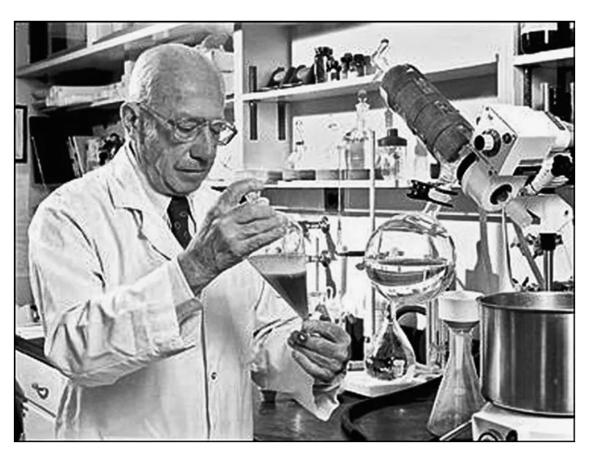

Chương 15 — Tâm thần học thần kinh: Bước đột phá trong dược lý tâm thần
Chương 15
Tâm thần học thần kinh: Bước đột phá trong Dược lý tâm thần
Trước năm 1950, các phương tiện để cải thiện rối loạn tâm thần chỉ giới hạn ở phân tâm học một mặt, và các liệu pháp cực đoan như phẫu thuật tâm thần hoặc kích thích điện lên não để gây co giật mặt khác. Tâm trí vẫn được quan niệm là tách biệt với thể xác. Tình hình này đã thay đổi triệt để nhờ những khám phá về thuốc vào thập niên 1950. Các thuốc điều trị tâm thần phân liệt như chlorpromazine, reserpine và nhóm butyrophenone (haloperidol) đã tạo ra sự làm dịu đáng kinh ngạc ở các bệnh nhân tâm thần phân liệt, dẫn đến việc giảm thiểu hoặc loại bỏ hoàn toàn tình trạng bệnh nhân kích động bạo lực tại các khoa điều trị nội trú. Một số nhóm thuốc chống trầm cảm (iproniazid, thuốc ức chế monoamine oxidase và thuốc chống trầm cảm ba vòng) được phát hiện, mang lại sự giải thoát đầu tiên cho chứng rối loạn tâm thần và cảm xúc gây suy nhược này. Hiệu quả của lithium trong điều trị trầm cảm và rối loạn lưỡng cực cũng được xác lập. Các thuốc điều trị rối loạn tâm căn, chẳng hạn như các trạng thái lo âu, cũng được khám phá, khởi đầu với meprobamate và nhóm benzodiazepine. Những phát hiện này đã định hình ba nhóm thuốc chính dùng trong tâm thần học suốt nửa thế kỷ tiếp theo. Tổng hợp lại, những khám phá ấy đã biến thập niên 1950 thành một thập kỷ mang tính cách mạng không chỉ đối với ngành tâm thần học mà còn đối với toàn thể nhân loại. Một nhánh nghiên cứu riêng biệt khác đã mô tả bản chất của stress và xác định vai trò trung tâm của trục hạ đồi–tuyến yên.
Chúng ta đã từng đề cập đến những tiến bộ trong việc tìm hiểu các phân tử tín hiệu nền tảng cho chức năng não bình thường ở các chương trước (Chương 4 và 9). Bây giờ chúng ta xem xét những bước tiến trong việc khám phá các phân tử có thể dùng để điều trị rối loạn tâm thần. Ở đây một lần nữa, những đột phá lớn đều diễn ra vào thập niên 1950:
Tất cả các nguyên mẫu của thuốc hướng thần hiện đại (lithium, chlorpromazine, meprobamate, imipramine và chlordiazepoxide) đều được phát hiện trong khoảng thời gian 10 năm [1948/49–1958]. Chưa từng có trước đó cũng như sau này một chuỗi các tiến bộ điều trị như vậy được tạo ra trong ngành tâm thần học.
(Spiegel, 45)
Công trình này đã cách mạng hóa việc điều trị bệnh tâm thần, đồng thời cung cấp những hiểu biết mới về chất dẫn truyền thần kinh và các hệ thống dẫn truyền thần kinh. Thông qua những khám phá này và các phát hiện liên quan, tâm thần học—và nhân loại—có lẽ đã hưởng lợi nhiều nhất từ những cuộc cách mạng trong vài năm ngắn ngủi của thập niên 1950.
Thuốc chống loạn thần
Việc phát hiện ra các hóa chất tổng hợp hữu ích trong y học lâm sàng nhằm lập lại trật tự cho những tâm trí rối loạn đã bắt đầu, như thường lệ, từ những loại thuốc vốn được các công ty dược phẩm phát triển cho mục đích khác. Trong trường hợp này, đó là các thuốc điều trị tác động của histamine. Trong số các hoạt động của mình, histamine được giải phóng trong cơ thể trong các phản ứng quá mẫn, một số rất nghiêm trọng như sốc phản vệ ảnh hưởng đến toàn bộ cơ thể, và một số gây khó chịu như các phản ứng dị ứng gây hắt hơi đi kèm cảm lạnh thông thường. Trong thập niên 1940, các phòng thí nghiệm dược phẩm tại Hoa Kỳ và Pháp (hoạt động độc lập với nhau do sự gián đoạn của Thế chiến II) đều quan tâm đến việc tổng hợp các hợp chất kháng histamine cho những mục đích này.
Triển vọng của những loại thuốc như vậy trong điều trị cảm lạnh thông thường đã tạo ra nhu cầu lớn từ công chúng; chính từ thời kỳ đó mà những loại thuốc vẫn còn phổ biến cho đến ngày nay, chẳng hạn như diphenhydramine (Benadryl), đã ra đời. Điều này đã dẫn Paul Charpentier, một nhà hóa học tại công ty dược phẩm Rhone-Poulenc ở Pháp, vào năm 1950 tổng hợp một số hợp chất có tác dụng kháng histamine. Một trong số đó là promethazine (Phenergan), chất này có tác dụng phụ tưởng chừng không mong muốn là làm bệnh nhân buồn ngủ (một tác dụng vẫn còn hiện diện ở nhiều thuốc kháng histamine ngày nay).
Chlorpromazine (Largactil, Thorazine)
Khám phá khởi đầu cho cuộc cách mạng trong tâm thần học bắt nguồn từ một bác sĩ phẫu thuật hải quân người Pháp đóng quân tại Malta.
Henri Laborit. Promethazine thu hút sự chú ý của Henri Laborit (Hình 15.1A) vì cả tác dụng an thần—mà ông thấy hữu ích trong việc làm dịu bệnh nhân khi chuẩn bị phẫu thuật—lẫn tác dụng kháng histamine, dựa trên giả thuyết rằng việc giải phóng histamine có thể là nguyên nhân gây sốc phẫu thuật (tình trạng tụt huyết áp đột ngột khi đang gây mê toàn thân). Ông gọi tác dụng an thần này là ‘‘gây mê tăng cường’’ (potentiated anesthesia) và ‘‘ngủ đông nhân tạo’’ (artificial hibernation). Ông yêu cầu công ty cung cấp thêm các hợp chất để thử nghiệm sâu hơn. Trong số đó, Charpentier đã tổng hợp một hợp chất mang mã 4560RP (gọi là ‘‘chlorpromazine’’), vốn bị công ty xếp xó vì hoạt lực kháng histamine yếu và bị cho là có tác dụng an thần quá mạnh. Laborit nhận thấy chlorpromazine tạo ra một trạng thái ‘‘quie´tude be´atifique’’ (‘‘bình thản an lạc’’) ở các bệnh nhân của mình. Do đó, ông gợi ý với các đồng nghiệp trong ngành tâm thần học rằng nó có thể hữu ích để làm dịu các bệnh nhân kích động. Tuy nhiên, hầu hết đều thấy nó không hiệu quả.
Pierre Deniker và Jean Delay. Bước đột phá đến vào năm 1951–1952 khi hai bác sĩ tâm thần tại Paris là Pierre Deniker và Jean Delay (Hình 15.1B, C) thử nghiệm một phác đồ bắt đầu với liều nhỏ và tăng dần lên liều tương đối lớn. Một cách ngoạn mục, các bệnh nhân kích động trở nên bình tĩnh. Các thử nghiệm tiếp theo cho thấy thuốc có tác dụng giảm lo âu và thậm chí mang lại cải thiện đối với chứng hoang tưởng và các triệu chứng loạn thần hưng cảm. Tin tức lan truyền nhanh chóng qua một loạt 11 công bố, bắt đầu từ Laborit vào tháng 2 và tiếp nối với Delay, Deniker cùng bốn nhóm nghiên cứu khác của Pháp, chỉ trong vòng 6 tháng của năm 1952 (Deniker, 1983).
Như mọi loại thuốc khác, chlorpromazine cũng có tác dụng phụ. Nghiêm trọng nhất là ở liều cao hơn, thuốc gây ra một hội chứng giống bệnh Parkinson, bao gồm cứng cơ, chậm vận động và run khi nghỉ ở các chi. Do đó, việc điều trị phải cân chỉnh giữa tác dụng kiểu Parkinson và tác dụng làm dịu. Như chúng ta sẽ thấy, chính các tác dụng kiểu Parkinson này thực chất đã trở thành một trong những chìa khóa để hiểu cơ chế tác động của thuốc lên não.
Nhiều tác dụng đa dạng của chlorpromazine đã thúc đẩy Rhone-Poulenc tiếp thị thuốc dưới tên gọi ‘‘Largactil’’ (‘‘tác dụng rộng’’). Một bác sĩ trẻ người Thụy Sĩ, F. Labhardt, đã biết đến loại thuốc này khi đang tu nghiệp sau tiến sĩ tại Paris vào năm 1951–1952. Trở về Basel, ông cùng các đồng nghiệp tiến hành các thử nghiệm với thuốc vào đầu năm 1953, chứng minh hiệu quả của nó trong điều trị trầm cảm, nghiện, hội chứng cai và đặc biệt là tâm thần phân liệt. Hội nghị chuyên đề Largactil lần thứ nhất được tổ chức tại Basel vào tháng 11 năm 1953, nơi các báo cáo về loại thuốc này đã khơi dậy sự quan tâm rộng rãi.
Chlorpromazine lần đầu tiên được thử nghiệm tại Bắc Mỹ vào năm 1954, và đến năm 1955 thuốc đã được chấp nhận tại Hoa Kỳ dưới tên thương mại ‘‘Thorazine’’. Tại đây, cũng như ở châu Âu, tác động của nó lên thực hành tâm thần học diễn ra tức thì và ngoạn mục. Những bệnh nhân mắc bệnh tâm thần nặng khiến họ hưng cảm, đe dọa, bạo lực, thu mình, la hét và nhìn chung không thể kiểm soát đã trở nên điềm tĩnh, hợp tác và có thể bắt đầu sinh hoạt bình thường. Chính tôi đã tận mắt chứng kiến những bệnh nhân điềm tĩnh và hợp tác này khi còn là sinh viên y khoa đi thực tập qua các khoa của các bệnh viện tâm thần ở khu vực Boston năm 1956; chúng tôi được kể lại rằng chỉ một năm trước đó, việc đi bộ qua các khoa này là điều bất khả thi vì nguy hiểm thể chất từ chính những bệnh nhân ấy.
Tất cả những điều này diễn ra từ rất lâu trước khi có một lĩnh vực mang tên khoa học thần kinh, nhưng rất ít tiến bộ kể từ đó có thể sánh được với tác động mang tính cách mạng và đầy lợi ích đối với sức khỏe tâm thần. ‘‘Đó là . . . lần đầu tiên một loại thuốc đơn lẻ có hoạt tính trong điều trị các chứng loạn thần nặng’’ (Deniker, 1983, 166).
Reserpine
Loại thuốc tiếp theo được phát hiện có tác động lên tâm trí bắt nguồn từ một loài thực vật gọi là cây ba gạc (Rauwolfia serpentina), vốn được biết đến ở Ấn Độ như một bài thuốc dân gian truyền thống.
Vào thập niên 1930, nó được đưa vào sử dụng lâm sàng tại Ấn Độ để hạ huyết áp cao. Hoạt chất chính là reserpine được Công ty Dược phẩm Ciba phân lập vào năm 1950, và các thử nghiệm lâm sàng bắt đầu để điều trị tăng huyết áp. Người ta sớm nhận thấy rằng, giống như chlorpromazine, reserpine có tác dụng làm dịu trạng thái tâm thần và có thể giúp thuyên giảm cho bệnh nhân tâm thần phân liệt. Cũng như trường hợp của chlorpromazine 2 năm trước đó, một loạt báo cáo dồn dập vào năm 1954 của Nathan Kline ở Hoa Kỳ, Delay và Deniker ở Pháp, H. Steck ở Thụy Sĩ cùng nhiều người khác đã xác lập các tác dụng này.
Các nghiên cứu cẩn trọng của Steck cho thấy liều cao reserpine gây ra các triệu chứng vận động kiểu Parkinson tương tự chlorpromazine (cử động cứng và chậm, run tay, v.v.). Khi đánh giá những kết quả này, Delay và Deniker (1955) hình dung rằng bộ não dường như đã bị các loại thuốc này nắm giữ và kìm lại, và họ đưa ra thuật ngữ ‘‘an thần kinh’’ (neuroleptic: neuro, ‘‘nơ-ron’’; lepti, ‘‘nắm giữ’’) để mô tả hiệu ứng đó. Thuật ngữ này về sau được áp dụng cho mọi loại thuốc ‘‘chống lại tình trạng bứt rứt nội tâm rõ rệt, kích động tâm thần vận động và mất ngủ nghiêm trọng’’, những triệu chứng đặc trưng cho loạn thần phân liệt, hưng cảm, hoang tưởng và trầm cảm (Spiegel, 1997, 3).
Reserpine được nhận thấy có tác dụng rất chậm, và ở liều cao hơn, các triệu chứng kiểu Parkinson cản trở tác dụng chống loạn thần. Thuốc dần không còn được dùng trong tâm thần học, mặc dù vẫn tiếp tục được sử dụng làm thuốc hạ huyết áp. Cơ chế tác động của nó sau này đã cung cấp những manh mối quan trọng trong việc phát triển thêm các thuốc an thần kinh.
Nhóm Butyrophenone: Haloperidol
Một nhóm thuốc an thần kinh quan trọng khác được tạo ra trong thập niên 1950 là nhóm butyrophenone. Công trình này bắt đầu vào năm 1953 với nghiên cứu của P. A. J. Janssen, J. P. Tollenaere và các đồng nghiệp về những hợp chất có thể hiệu quả hơn cả chlorpromazine và reserpine (được thuật lại trong Janssen và Tollenaere, 1983). Họ khởi đầu từ các hóa chất hoàn toàn không liên quan thuộc dãy diphenylpropylamine, với mục tiêu tăng cường sức mạnh giảm đau của một chất trong dãy gọi là ‘‘pethidine’’. Họ kiên trì nỗ lực tổng hợp qua một loạt dẫn xuất có đặc tính giống morphine (giảm đau như tác dụng của morphine) giảm dần và đặc tính giống chlorpromazine (làm dịu động vật) tăng dần cho đến hợp chất R 1625 (R viết tắt của ‘‘research’’ [nghiên cứu], 1625 là số thứ tự hợp chất được tổng hợp trong nghiên cứu).
R 1625, được đặt tên là ‘‘Haloperidol’’, được tổng hợp vào tháng 2 năm 1958 và cấp bằng sáng chế vào tháng 4 cùng năm. Hoạt lực của nó mạnh gấp nhiều lần chlorpromazine, tác dụng nhanh hơn, kéo dài hơn và ít tác dụng phụ hơn. ‘‘Haloperidol cho đến nay là thuốc an thần kinh hoạt tính mạnh nhất được biết đến vào năm 1958’’ (Janssen và Tollenaere, 1983, 189).
‘‘Ngày nay người ta chỉ có thể phỏng đoán điều gì đã dẫn dắt chúng tôi chọn đúng tổ hợp các mảnh phân tử đó trong số hàng nghìn tổ hợp khả dĩ mà chúng tôi có thể tổng hợp. Một sự am hiểu nhất định về mối liên hệ cấu trúc–hoạt tính, sự may mắn và tình cờ khám phá chắc chắn là những yếu tố quan trọng đứng về phía chúng tôi.’’ (Janssen và Tollenaere, 1983, 188)
Haloperidol sau đó trở nên vô cùng giá trị như một công cụ nghiên cứu. Nhờ đánh dấu phóng xạ, người ta chứng minh được rằng trong hai loại thụ thể đối với dopamine ở não là D1 và D2, haloperidol gắn kết vào thụ thể D2. Đây là bằng chứng quan trọng chỉ ra cơ chế tác động của các thuốc an thần kinh nói chung, tức là phong tỏa các thụ thể dopaminergic D2 (tóm tắt trong Snyder, 1996).
Thuốc chống trầm cảm
Trong nửa đầu thế kỷ XX, một sự đồng thuận đã hình thành giữa các bác sĩ tâm thần về hai loại rối loạn tâm thần nặng chính. Một bên là các chứng loạn thần, thường được gộp dưới thuật ngữ ‘‘tâm thần phân liệt’’ (schizophrenia), đặc trưng bởi sự rối loạn tư duy nghiêm trọng đến mức người bệnh tách rời khỏi thực tại (schizo, ‘‘phân chia’’; phrenia, ‘‘tâm trí’’). Như chúng ta đã thấy, đây là những rối loạn được cải thiện nhờ chlorpromazine. Bên kia là chứng trầm cảm, đặc trưng bởi cảm giác buồn bã và tuyệt vọng đau đớn, sâu sắc đến mức một người có thể đánh mất mọi ham muốn sống. Nghịch lý thay, trầm cảm thường xen kẽ với hưng cảm—cảm giác phấn khích quá mức rằng mình có thể làm được mọi thứ. Trong cuộc sống bình thường, ai cũng trải qua những giai đoạn buồn chán hoặc hân hoan, nhưng các dạng nặng lại gây mất năng lực sinh hoạt và khi xuất hiện lặp đi lặp lại cùng nhau thì được gọi là ‘‘rối loạn hưng–trầm cảm’’, hay bệnh lưỡng cực.
Liệu pháp hiệu quả nhất cho trầm cảm nặng từng là liệu pháp sốc điện (EST), liên quan đến việc truyền các dòng điện áp lớn lặp đi lặp lại qua đầu. EST là một phương pháp thô sơ, từng và vẫn còn ít được hiểu rõ, nhưng tiếp tục được sử dụng trong các ca nặng với kết quả thường tương đối tốt. Tuy nhiên, đó là một thực trạng đòi hỏi một giải pháp thay thế dưới dạng liệu pháp thuốc.
Các bác sĩ tâm thần vào giữa thế kỷ luôn tìm kiếm tác dụng chống trầm cảm của các loại thuốc, nhưng chlorpromazine lại gây thất vọng ở phương diện này. Các công ty dược phẩm tạo ra nhiều biến thể của thuốc kháng histamine nhưng cũng thu được rất ít thành công.
Bước đột phá đến từ một số nguồn không ngờ tới.
Iproniazid
Một nguồn đến từ bệnh lao, căn bệnh vào giữa thế kỷ vẫn là một vấn đề y tế công cộng lớn. Bệnh nhân được điều trị chủ yếu bằng các biện pháp chăm sóc giảm nhẹ tại các viện điều dưỡng khắp Hoa Kỳ và thế giới. Các công ty dược phẩm tích cực tìm cách phát triển thuốc chống lao đặc hiệu, và vào năm 1952 Hoffman-LaRoche bắt đầu tiếp thị hai loại thuốc như vậy là iproniazid (Marsalid) và isoniazid. Trong điều trị bệnh lao, iproniazid cho kết quả lẫn lộn, nhưng các bác sĩ lâm sàng nhận thấy bệnh nhân dùng thuốc trở nên vui vẻ, thậm chí sảng khoái, vượt xa mức người ta có thể mong đợi từ bất kỳ sự cải thiện thể trạng nào của họ. Một số nhóm đã thử nghiệm iproniazid trên bệnh nhân tâm thần, nhưng chưa ai xem xét cụ thể khả năng sử dụng nó như một thuốc chống trầm cảm.
Trong thời gian này, Nathan Kline, bác sĩ tâm thần đã giới thiệu reserpine tại Hoa Kỳ để điều trị tâm thần phân liệt, đang phát triển ý tưởng rằng nếu reserpine có thể mang lại tác dụng làm dịu ở bệnh nhân kích động, thì hẳn phải có một loại thuốc khác có tác dụng kích thích. Năm 1956, ông biết được từ Charles Scott và Max Chessin tại phòng thí nghiệm Warner về các thí nghiệm của họ cho thấy nếu động vật được dùng iproniazid trước khi dùng reserpine, thuốc này sẽ đảo ngược tác dụng của reserpine từ giảm hoạt động sang tăng hoạt động (Lehmann và Kline, 1983, 218). Các kết quả tương tự cũng được Bernard Brodie (Hình 15.1D) và Parkhurst Shore thu được một cách độc lập tại Viện Y tế Quốc gia (NIH).
Thời điểm đó có rất ít quy định ràng buộc đối với việc phát triển thuốc. Kline nhanh chóng xin được chấp thuận cho thử nghiệm lâm sàng đầu tiên, mà ông triển khai cùng John Saunders và Harry Loomer tại Bệnh viện Rockland vào tháng 11 năm 1956. Đến tháng 2 năm 1957, có vẻ đã rõ ràng rằng iproniazid (dưới tên ‘‘Marsalid’’) có tác dụng đặc hiệu trong việc làm giảm trầm cảm. Điều này được báo cáo tại các hội nghị vào tháng 4 và tháng 5 (bài báo đầu tiên của Loomer và cộng sự xuất hiện năm 1957). Như vậy, từ giả thuyết đến khi hoàn thành thành công thử nghiệm lâm sàng đầu tiên chỉ mất đúng 1 năm (Lehmann và Kline, 1983). Dù tốt hay xấu, đó quả là một thời kỳ như thế!
Thuốc ức chế Monoamine Oxidase
Hiểu biết về cơ chế tác động của iproniazid đến từ một nhánh nghiên cứu khác vốn có lịch sử lâu đời riêng. Vào thập niên 1930, một loại enzyme phân giải axit amin tyramine (bằng cách loại bỏ nhóm hydroxyl tận cùng) trong gan chuột cống đã được phát hiện. Một họ lớn các hợp chất amine được xác định, và enzyme phân giải chúng được gọi là ‘‘monoamine oxidase’’ (MAO) (Zeller và cộng sự, 1939; Zeller, 1983, 224). Trong số các hợp chất được thử nghiệm về đặc tính kháng MAO có nhóm hydrazide, chính là nhóm chứa iproniazid và isoniazid.
Sự sẵn có mới mẻ của các amine đánh dấu phóng xạ 14C đã giúp Albert Zeller và các đồng nghiệp tại Đại học Northwestern thực hiện các nghiên cứu trên động vật về chuyển hóa amine, cho thấy quá trình phân giải bởi MAO có tham gia. Họ tiếp tục phát hiện rằng iproniazid là chất hiệu quả nhất từng được biết đến trong việc ngăn chặn sự luân chuyển monoamine (Zeller, 1983, 227). Các amine được thử nghiệm bao gồm norepinephrine—vốn được biết là một chất dẫn truyền thần kinh trong hệ thần kinh tự chủ—và serotonin. Dựa trên các kết quả này, Zeller và các đồng nghiệp đã khởi xướng các nghiên cứu lâm sàng riêng về iproniazid trong điều trị trầm cảm. Kết quả nhất quán với các công trình quy mô lớn và nổi tiếng hơn của Kline và cộng sự.
Nghiên cứu của họ về MAO ban đầu gợi lên giả thuyết rằng, tương tự như tác dụng của acetylcholinesterase trong việc chấm dứt hoạt động của acetylcholine tại các khớp thần kinh cholinergic (xem Chương 4), MAO có thể chấm dứt hoạt động của epinephrine và các monoamine khác tại các khớp thần kinh adrenergic. Các nghiên cứu sau đó cho thấy hoạt động của các monoamine thực tế được chấm dứt chủ yếu bởi một cơ chế khác, đó là tái hấp thu vào đầu tận cùng tiền synap (Zeller, 1983, 224; Axelrod, 1965).
Con đường chuyển hóa tổng hợp các monoamine, từ tyrosine hydroxylase qua dopamine và norepinephrine đến epinephrine, đã được xác định trong công trình kinh điển của Hugh Blashko năm 1939 (Chương 4). Việc phân tích con đường này trở nên khả thi nhờ hai bước then chốt: sự ra đời của các thuốc ức chế MAO giúp ngăn chặn sự phân giải monoamine đang nghiên cứu, và reserpine giúp làm cạn kiệt các monoamine. Nhờ hai công cụ này vào đầu thập niên 1950, cộng thêm việc đánh dấu phóng xạ các hợp chất, các monoamine đã bước vào một lĩnh vực nghiên cứu lớn trong hóa học thần kinh và tâm thần học, vốn vẫn tiếp diễn cho đến ngày nay.
Sự cạn kiệt các monoamine do reserpine lần đầu được Bernard Brodie và Parkhurst Shore báo cáo vào năm 1957, khi họ phát hiện reserpine làm cạn kiệt lượng serotonin có thể đo được trong toàn bộ não. Một tác dụng tương tự sau đó được tìm thấy trên chất dẫn truyền thần kinh norepinephrine. Năm 1958, các xét nghiệm toàn não cho thấy sự hiện diện của amine có liên quan là dopamine, và người ta sớm chứng minh rằng nó cũng bị reserpine làm cạn kiệt (Snyder, 1996). Như vậy, trong khi reserpine dần không còn hữu ích trên lâm sàng, nó lại có một cuộc đời thứ hai như một công cụ quý giá trong nghiên cứu trên động vật.
Phần lớn các nghiên cứu ban đầu này tại Hoa Kỳ xuất phát từ Phòng thí nghiệm Dược lý Hóa học của Brodie tại NIH. Brodie là một nhân vật có tầm vóc lớn, người có nghiên cứu được thúc đẩy bởi cả phương pháp lẫn ý tưởng; như người cộng tác lâu năm của ông là Julius Axelrod nhận xét (Healy, 2001, 43):
‘‘Ông ấy rất giàu trí tưởng tượng. . . . để trở thành một nhà khoa học năng suất, bạn phải có thật nhiều ý tưởng để thử nghiệm. . . . Nếu bạn không có ý tưởng mới nào, chẳng có gì xảy ra cả – bạn chỉ có thể làm công việc gia tăng dần – tức là chỉ cải tiến trên cái đã biết. Nhưng để làm điều gì đó nguyên bản, bạn phải có những ý tưởng thực sự táo bạo mà Brodie sở hữu và ông cũng rất có sức thuyết phục. Ông ấy rất biết cách truyền cảm hứng và khiến bạn muốn lao ngay vào phòng thí nghiệm để thử nghiệm các ý tưởng của ông.’’
Imipramine và các thuốc ba vòng
Sau khi chlorpromazine được đưa vào làm thuốc chống loạn thần, các nhà hóa học bắt tay vào tìm kiếm những loại thuốc có liên quan về mặt hóa học với hy vọng có tác dụng tương tự. Trong số đó có các hợp chất iminodibenzyl, vốn giống chlorpromazine ở chỗ gồm một lõi ba vòng benzen xếp thành hàng, với một nhóm amine dài vài nguyên tử carbon gắn vào vòng ở giữa. Hầu hết các chất này nằm yên trên kệ, nói cách khác, chỉ chờ các bác sĩ lâm sàng mang ra thử nghiệm.
Trong số các bác sĩ lâm sàng đầu tiên thử nghiệm chlorpromazine có Roland Kuhn tại một phòng khám tâm thần ở Thụy Sĩ. Không đủ khả năng chi trả cho việc sử dụng chlorpromazine trên quy mô lớn, năm 1954 ông hỏi các nhà hóa học tại Dược phẩm Geigy xem liệu họ có thể cung cấp cho ông một hợp chất rẻ tiền hơn có cấu trúc tương tự chlorpromazine hay không. Hợp chất G 22355, còn gọi là ‘‘imipramine’’, đã được cung cấp. Kuhn thử nghiệm nó trên nhiều bệnh nhân tâm thần với kết quả đáng thất vọng, nhưng ông vẫn kiên trì. Vào mùa xuân năm 1957, chỉ cần thành công ở ba bệnh nhân cũng đủ thuyết phục ông rằng imipramine có tác dụng chống trầm cảm đặc hiệu. Báo cáo đầu tiên của ông được trình bày vào tháng 9 năm 1957 trước cử tọa khoảng một tá người tại Đại hội Tâm thần học Quốc tế lần thứ hai ở Zurich (xem Kuhn, 1958).
Tiếng lành đồn xa, và imipramine nhanh chóng được xác lập trong điều trị trầm cảm nội sinh (tự phát). Nó cũng trở thành nguyên mẫu của nhóm thuốc chống trầm cảm ba vòng, nhóm thuốc không chỉ trở thành trụ cột trong thực hành lâm sàng mà còn là công cụ mạnh mẽ trong các thí nghiệm trên động vật về cơ chế não bộ nền tảng của bệnh trầm cảm. Trong những năm gần đây, các thuốc ba vòng ngày càng được thay thế bởi các thuốc ức chế tái hấp thu serotonin có chọn lọc (SSRI).
Lithium
Một nhánh nghiên cứu hoàn toàn riêng biệt liên quan đến việc sử dụng lithium để chống lại các trạng thái hưng–trầm cảm. Đã có những quan sát truyền miệng nhưng chưa có nghiên cứu có hệ thống nào cho đến khi John Cade (Hình 15.2A) ở Úc đặt giả thuyết rằng các trạng thái hưng cảm có thể tạo ra sự dư thừa một sản phẩm nào đó của cơ thể, vốn sẽ được bài tiết với lượng tăng cao trong nước tiểu. Trong khi thử nghiệm tác dụng độc hại của nước tiểu người lên chuột lang, ông đã đi đến việc sử dụng một dạng axit uric hòa tan gắn với lithium và cuối cùng phát hiện ra rằng khả năng bảo vệ chống lại tác dụng độc hại của urê là do lithium. Tiêm lithium carbonate vào chuột lang gây ra trạng thái lờ đờ. Năm 1949, ông báo cáo rằng lithium carbonate làm giảm các trạng thái kích thích ở bệnh nhân loạn thần. Rất ít bác sĩ tâm thần để ý đến.
Năm 1954, Mogens Schou (Hình 15.2B) ở Đan Mạch đã tiến hành một nghiên cứu lâm sàng có hệ thống xác lập hiệu quả của lithium trong điều trị các trạng thái hưng cảm (Schou và cộng sự, 1954). Mặc dù ban đầu có sự hoài nghi rằng một ion kim loại đơn giản lại có thể tạo ra tác dụng này, các nghiên cứu tiếp theo qua nhiều thập kỷ của Schou và những người khác đã dần dẫn đến sự chấp nhận lithium như một thành phần trong liệu pháp điều trị rối loạn lưỡng cực.
Một trở ngại đối với việc sử dụng lithium là thực tế rằng, với tư cách một loại muối thông thường, nó không thể được cấp bằng sáng chế; do đó, không có công ty dược phẩm nào quan tâm đến việc phát triển nó cho mục đích điều trị. Tuy nhiên, tầm quan trọng của liệu pháp lithium không thể bị xem nhẹ: theo Richard Restak (1995, 66–67): ‘‘Khám phá của ông [John Cade] về tác dụng chống hưng cảm của lithium đã khai sinh ra khoa học dược lý tâm thần hiện đại’’.
‘‘Thuốc an thần nhẹ’’ (Minor Tranquillizers)
Khác biệt với các dạng bệnh tâm thần nặng đặc trưng bởi tâm thần phân liệt và trầm cảm là các trạng thái căng thẳng, lo âu, bồn chồn, mất ngủ, đau đầu, rối loạn tiêu hóa và những biểu hiện tương tự (Spiegel, 17) do vô số áp lực của đời sống thường nhật gây ra. Đối lập với các chứng loạn thần, những trạng thái này mang tên gọi rối loạn tâm căn (neuroses). Chúng có thể dao động từ mức gây khó chịu đến mức làm mất khả năng sinh hoạt.
Theo truyền thống, con người tìm cách giải tỏa những căng thẳng này bằng nhiều phương tiện khác nhau (Spiegel, 20). Rượu là một trong những thứ phổ biến nhất; tuy nhiên, như ai cũng biết quá rõ, rượu chỉ có tác dụng làm dịu chung chung và thoáng qua, và khi dùng mạn tính sẽ trở nên gây nghiện và có hại. Thuốc lá cũng giúp bình tĩnh nhưng gây nghiện, với những tác hại riêng lên cơ thể. Các chất dạng thuốc phiện có đặc tính gây nghiện nổi tiếng, cũng như các loại thuốc như barbiturate.
Meprobamate (Miltown)
Được thúc đẩy bởi thành công của chlorpromazine trong việc cải thiện các chứng loạn thần, các công ty dược phẩm và bác sĩ lâm sàng vào đầu thập niên 1950 đã nỗ lực thử nghiệm các loại thuốc có tác dụng làm dịu đặc hiệu (còn gọi là ‘‘thuốc giải lo âu’’ [anxiolytics]) cho các chứng rối loạn tâm căn. Hướng đi cuối cùng chứng tỏ thành công thực chất bắt đầu từ một chương trình nghiên cứu tại một công ty dược phẩm ở Anh vào thập niên 1940 nhằm phát triển các loại thuốc hiệu quả chống lại vi khuẩn kháng penicillin (Spiegel và Markstein, 1997, 43; Snyder, 157).
Chương trình do Frank Berger đứng đầu, một người Tiệp Khắc đã trốn sang Anh trong Thế chiến II. Một trong những hợp chất được tạo ra là mephenesin. Một tác dụng phụ của thuốc này là động vật được tiêm liều cao trở nên mềm nhũn do giãn cơ và an thần, mặc dù chúng vẫn hoàn toàn tỉnh táo (Snyder, 157). Berger mô tả tác dụng lên động vật là ‘‘sự làm dịu’’ (tranquillization). Các thử nghiệm trên người cũng cho thấy thuốc vừa giãn cơ vừa giảm lo âu mà không làm mờ ý thức.
Mephenesin bị phân hủy nhanh trong cơ thể, vì vậy các nhà hóa học đã thử nghiệm các hợp chất liên quan chuyển hóa chậm hơn. Điều này dẫn đến sự ra đời của meprobamate vào năm 1954, đáp ứng các tiêu chí mong muốn là giảm lo âu với thời gian tác dụng kéo dài và ít tác dụng phụ. Meprobamate được Berger thử nghiệm lâm sàng năm 1955 (Spiegel và Markstein, 1997, 45) và, khi được tung ra thị trường Hoa Kỳ cùng năm dưới tên gọi ‘‘Miltown’’, đã trở thành thuốc chống lo âu được sử dụng rộng rãi đầu tiên. Trái ngược với tác dụng chống loạn thần của chlorpromazine (được xếp vào nhóm ‘‘thuốc an thần mạnh’’ [major tranquillizer]), meprobamate được gọi là ‘‘thuốc an thần nhẹ’’ (minor tranquillizer) vì tác động lên rối loạn tâm căn. Đến lượt các barbiturate bị giáng xuống thành ‘‘thuốc ngủ/an thần gây ngủ’’ (sedatives). Tuy nhiên, thành công của meprobamate không kéo dài lâu. Bệnh nhân vẫn bị buồn ngủ. Tệ hơn nữa, bệnh nhân trở nên dung nạp (lờn) với thuốc, đòi hỏi liều ngày càng cao hơn, dẫn đến tình trạng nghiện.
Nhóm Benzodiazepine (Librium, Valium)
Thành công ban đầu của meprobamate đã kích thích các công ty dược phẩm bước vào lĩnh vực mới này bằng cách chỉ đạo các nhà hóa học tìm kiếm các hợp chất khác có đặc tính ‘‘an thần tâm lý’’ (psychosedative). Trong số đó có Leo Sternbach (Hình 15.3) tại Phòng thí nghiệm Roche. Sternbach được đào tạo tại Ba Lan; ông đang làm việc ở Thụy Sĩ khi Thế chiến II bùng nổ và sớm tìm đường sang Hoa Kỳ. Thay vì chiến lược phát triển thuốc thông thường là xây dựng từ các hợp chất đã biết, Sternbach quyết định chọn hướng tiếp cận mạo hiểm hơn là thử sức với những hợp chất hoàn toàn mới (Haefely, 1983, 272). Ông nhớ lại một số hóa chất mình từng nghiên cứu ở Ba Lan làm thuốc nhuộm tiềm năng, bao gồm 3,1–4-benzoxadiazepine. Chúng có một chuỗi nhánh bazơ, vốn có hoạt tính trong nhiều loại thuốc mang hoạt tính sinh học (Haefely, 1983, 274).
Sternbach đã tổng hợp một số hợp chất dẫn xuất từ cấu trúc này và thử nghiệm chúng nhưng không thu được kết quả thú vị nào trên động vật. Công việc bị gác lại, và công ty yêu cầu ông chuyển sang các dự án khác. Một ngày nọ khi đang dọn dẹp phòng thí nghiệm, ông để ý thấy một hợp chất cuối cùng còn sót lại từ nghiên cứu đó và gửi nó, gắn nhãn Ro 5-0690, cho Lowell Randall, trưởng đơn vị dược lý, để đánh giá tác dụng dược lý. Vài ngày sau, Randall báo cáo rằng hợp chất này thể hiện mọi đặc tính mong muốn: ‘‘một chất giãn cơ và an thần mạnh không có đặc tính gây mê toàn thân và dường như không có tác dụng lên hệ tự chủ, và tất cả những điều này đi kèm độc tính rất thấp’’ (Haefely, 1983, 275).
Sternbach tái tổng hợp Ro 5-0690 với số lượng lớn hơn để phát triển thêm. Ông phát hiện ra rằng hợp chất này có cấu trúc hóa học của một quinazoline 3-oxide và thuộc nhóm benzodiazepine (Haefely, 1983, 277). Cuối cùng nó được đặt tên gốc là ‘‘chlordiazepoxide’’. Các đặc tính dược lý được báo cáo vào năm 1959 và công bố vào năm sau (Randall và cộng sự, 1960). Các thử nghiệm lâm sàng bắt đầu vào năm 1958 với kết quả đáng thất vọng. Đối tượng thử nghiệm cảm thấy buồn ngủ, chóng mặt và nói lắp, nên các thử nghiệm bị dừng lại. Sau đó người ta nhận ra liều lượng quá cao; ở liều thấp hơn, các tác dụng mong muốn đã xuất hiện. Sự chấp nhận lan rộng nhanh chóng, và vào tháng 2 năm 1960, sau 2 năm thử nghiệm lâm sàng, chlordiazepoxide được đưa vào thị trường Hoa Kỳ như một loại thuốc an thần (nhẹ) mới với tên gọi ‘‘Librium’’. Việc tinh chỉnh hóa học thêm trên phân tử này được thực hiện để tìm ra một hợp chất ít đắng hơn, kết quả là vào năm 1963 cho ra đời diazepam (Valium). Hàng chục biến thể khác đã xuất hiện kể từ đó.
Trong suốt quá trình phát triển nhóm benzodiazepine, chưa có hiểu biết nào về cơ chế dược lý được rút ra. Trái ngược với quá trình phát triển thuốc chống trầm cảm—vốn ngay từ các khảo sát ban đầu đã cho thấy liên quan đến các chất dẫn truyền thần kinh monoamine—các thử nghiệm trên hệ acetylcholine và monoamine chỉ cho thấy tác động không đáng kể. Phải đến cuối thập niên 1960, mối liên hệ giữa benzodiazepine với các khớp thần kinh ức chế sử dụng chất dẫn truyền thần kinh g-aminobutyric acid (GABA) mới được nhận ra. Ngoài ra, tác dụng của benzodiazepine như thuốc chống co giật trong kiểm soát cơn động kinh cũng phải chờ đến tương lai.
Stress
Rất ít thuật ngữ từ nghiên cứu y sinh học đi vào vốn từ vựng đại chúng rộng rãi như ‘‘stress’’, một sản phẩm khác của thập niên 1950, mà Hans Selye là người khởi xướng.
Selye sinh ra trong gia đình gốc Hungary tại Vienna vào năm 1907. Sau khi lấy bằng y khoa ở Prague năm 1929, ông sang Hoa Kỳ học tại Johns Hopkins, rồi chuyển đến Canada tại Đại học McGill. Ông bắt đầu bằng việc nghiên cứu sự phát triển xương và chuyển hóa canxi, sau đó thực hiện một dự án tiêm chiết xuất nội tạng vào động vật và quan sát tác động lên các cơ quan khác nhau trong cơ thể. Những phát hiện ban đầu của ông được báo cáo trong một bài ghi chú ngắn trên tạp chí Nature năm 1936, nhan đề ‘‘Một hội chứng gây ra bởi các tác nhân gây hại đa dạng’’ (A Syndrome Produced by Diverse Nocuous Agents), mở đầu như sau (trang 32):
Các thí nghiệm trên chuột cống cho thấy nếu cơ thể bị tổn thương nặng bởi các tác nhân gây hại cấp tính không đặc hiệu như tiếp xúc với lạnh, chấn thương phẫu thuật, gây sốc tủy (cắt ngang tủy sống), vận động cơ quá sức, hoặc nhiễm độc với liều cận tử của nhiều loại thuốc khác nhau (adrenaline, atropine, morphine, formaldehyde, v.v.), một hội chứng điển hình sẽ xuất hiện, với các triệu chứng độc lập với bản chất của tác nhân gây hại hay loại dược lý của thuốc được dùng, và đúng hơn là đại diện cho một phản ứng đối với tổn thương nói chung.
Ông mô tả hội chứng này phát triển qua ba giai đoạn. Trong 2 ngày đầu, nhiều cơ quan cơ thể bị ảnh hưởng: tuyến ức teo lại, dạ dày và tá tràng xuất hiện vết loét; có hiện tượng phù nề lan rộng, cùng các tác động khác. Tiếp theo là sự phì đại của vỏ thượng thận và điều có vẻ như là sự chuyển hướng của thùy trước tuyến yên sang tăng cường sản xuất các hormone hướng giáp và hướng thượng thận để đối phó với tình trạng khẩn cấp của cơ thể. Nếu phản ứng này thành công, nó được gọi là ‘‘giai đoạn đề kháng’’ (resistance stage). Nếu không, động vật sẽ tiến sang giai đoạn thứ ba, giai đoạn kiệt sức.
Chúng tôi xem giai đoạn đầu tiên là biểu hiện của một báo động chung của cơ thể khi đột ngột đối mặt với một tình huống nguy kịch, và do đó gọi nó là ‘‘phản ứng báo động chung’’ (general alarm reaction). Vì hội chứng xét trên tổng thể dường như đại diện cho một nỗ lực tổng quát của cơ thể nhằm tự thích nghi với các điều kiện mới, nó có thể được gọi là ‘‘hội chứng thích nghi chung’’ (general adaptation syndrome). Có thể so sánh nó với các phản ứng phòng vệ chung khác như viêm hay sự hình thành kháng thể miễn dịch. Các triệu chứng của phản ứng báo động rất giống với nhiễm độc histamine hoặc sốc phẫu thuật hay sốc phản vệ; do đó không loại trừ khả năng một phần thiết yếu trong việc khởi phát hội chứng là sự giải phóng một lượng lớn histamine hoặc một chất tương tự, có thể được phóng thích từ các mô một cách cơ học trong chấn thương phẫu thuật, hoặc bằng các phương thức khác trong những trường hợp khác. Đối với chúng tôi, dường như các dạng ít nhiều rõ rệt của phản ứng ba giai đoạn này đại diện cho đáp ứng thông thường của cơ thể trước các kích thích như thay đổi nhiệt độ, thuốc men, vận động cơ, v.v., những thứ mà sự quen dần hoặc chai lì có thể xảy ra (32).
Bài báo năm 1936 này được gọi là ‘‘một hòn đá tảng của tâm thần học thần kinh vì nó dẫn đến việc nghiên cứu tác động của stress và hormone, đặc biệt là corticosteroid, lên chức năng não’’ (Neylan, 1998, 230). Selye đã phát triển ý tưởng về ‘‘hội chứng thích nghi chung’’ thông qua một loạt thí nghiệm về tác động lên các cơ quan khác nhau của cơ thể. Đến năm 1950, ông đã xác định được các con đường nội tiết kết nối với nhau dường như có tham gia. Bằng cách đó, ông được ghi nhận đã xác định trục hạ đồi–tuyến yên (HPA) là con đường trung tâm kiểm soát nội tiết, tương ứng về mặt sinh lý với con đường giải phẫu và mạch máu từ vùng hạ đồi đến thùy trước tuyến yên được Harris và các cộng sự (1955) xác định trong cùng giai đoạn này (xem Chương 11).
Năm 1949, ông bắt đầu thay thế thuật ngữ ‘‘phản ứng báo động’’ bằng ‘‘stress’’ khi mô tả hội chứng này, trong các bài báo nghiên cứu (Fortier và Selye, 1949) và ngay sau đó trong một chuyên khảo đồ sộ (Selye, 1956). Những ấn phẩm này lập tức giúp từ ‘‘stress’’ được lưu hành rộng rãi trong công chúng. Tôi nhớ rất rõ thời kỳ này, khi ý tưởng về mối liên kết giữa não và cơ thể—thường trong bối cảnh mới của ‘‘y học tâm thể’’ (psychosomatic medicine)—ngày càng được thảo luận nhiều. Bức tường ngăn cách 300 năm do Descartes dựng lên giữa hai thực thể này đang bị phá vỡ. Chính trong thời gian đó, các loại thuốc hướng tâm thần bắt đầu xuất hiện trên thị trường, hứa hẹn làm giảm nhẹ hoặc chữa khỏi nhiều chứng bệnh—lo âu, rối loạn tâm căn, trầm cảm—vốn gắn liền trực tiếp hoặc gián tiếp với stress.
Selye đã cho ra đời hàng loạt bài báo và sách về chủ đề này. Ông trở thành một nhân vật đầy sức hút trong việc quảng bá loại hình khoa học mới mẻ này, kết nối thế giới của bộ não, cơ thể và hormone, cùng cách chúng đối phó với những căng thẳng của cuộc sống. Tính đến khi qua đời vào năm 1982, ông đã công bố 1.700 bài báo và 40 cuốn sách. Ông thường được nhắc đến như người xứng đáng nhận sự vinh danh cao nhất cho những thành tựu của mình. Có một số lý do khiến ông chưa đạt được điều đó. Trước hết là vấn đề với định nghĩa của ‘‘stress’’. Trong vật lý học, stress (ứng suất) là tác nhân, còn đáp ứng là strain (biến dạng), hoàn toàn ngược lại với cách dùng của Selye. Về sau, người ta dẫn lời ông bày tỏ sự hối tiếc về sự thiếu nhất quán thuật ngữ này. Quy mô bao trùm tất cả trong quan niệm của ông khiến nó dễ bị chỉ trích vì những thiếu chính xác khi mô tả các khía cạnh cụ thể của hệ thống ‘‘stress’’, chẳng hạn như cho rằng đáp ứng stress luôn giống hệt nhau bất kể bản chất của ‘‘tác nhân gây stress’’ (stressor). Corticosteroid là một phần quan trọng của đáp ứng stress và vốn đã bị thổi phồng quá mức như một thuốc chữa bách bệnh cho nhiều phản ứng viêm; điều này cũng thúc đẩy một thái độ hoài nghi lành mạnh đối với các tuyên bố về tầm quan trọng của đáp ứng stress. ‘‘Stress’’ sớm trở thành một thuật ngữ bao hàm quá rộng, qua đó đánh mất giá trị khoa học của nó. Mặc dù là một ‘‘hòn đá tảng’’ của tâm thần học thần kinh, stress hầu như không được nhắc đến trong một cuốn lịch sử tâm thần học gần đây, và Selye bị rơi vào quên lãng (Shorter, 1997).
Nghiên cứu hiện đại về stress được thực hiện chủ yếu ở cấp độ các hệ thống cụ thể, chẳng hạn như trục HPA, hệ viền (limbic) phụ trách cảm xúc và lo âu, và hệ tim mạch nền tảng cho chứng tăng huyết áp. Tuy nhiên, nhìn từ góc độ dài hạn hơn, ‘‘stress’’ là một trong những đóng góp quan trọng của thập niên 1950, cả vì tác động của nó đối với y học và công chúng nói chung lẫn vì sự hòa nhập của nó vào tư duy hằng ngày về thân phận con người.
